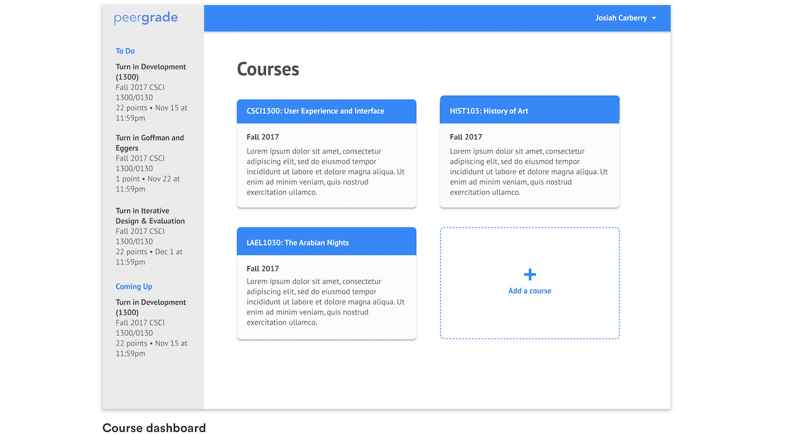
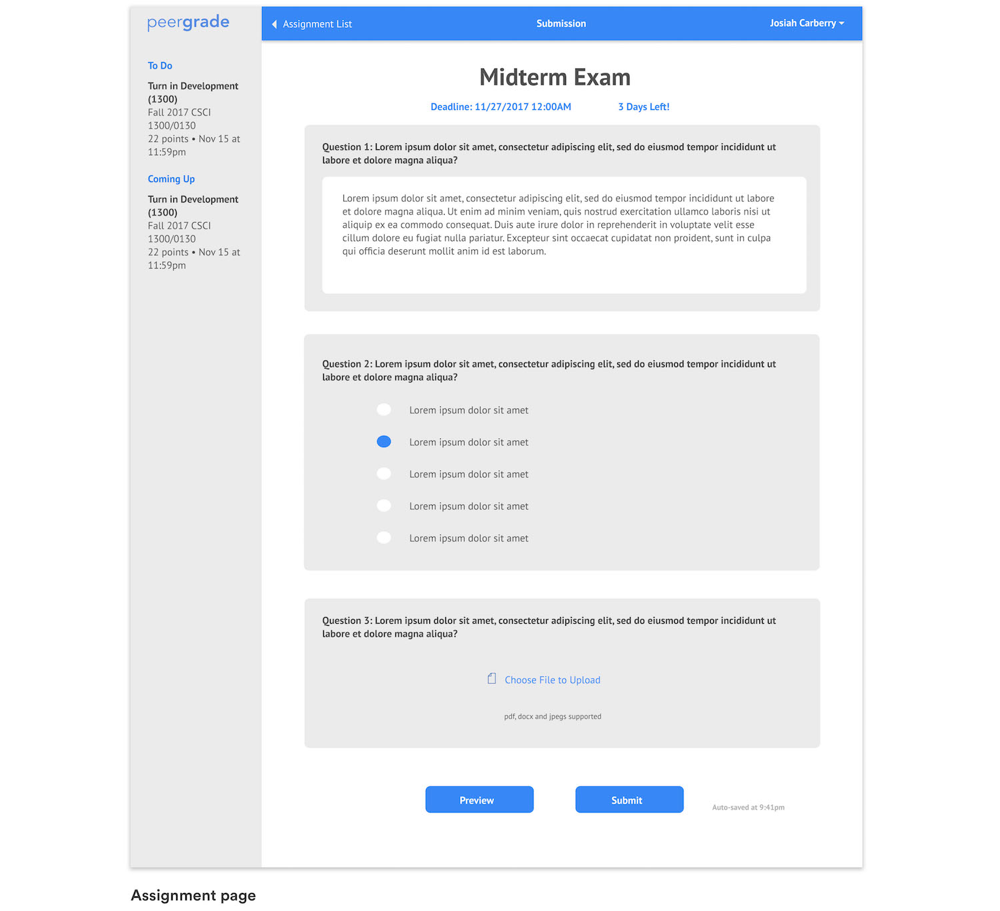
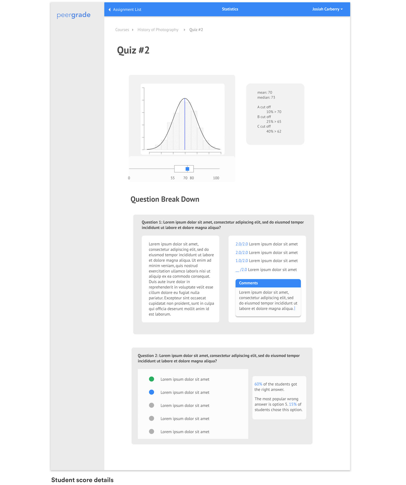

Peergrade: Redesign
We were tasked to design a hypothetical interface for a recent startup of choice while ignoring any interfaces they've built already - coming up with the design using only their description. We chose Peergrade, which is a student feedback and grading platform.
Task 1: Design an interface for an emerging startup
Task 2: Ignore existing interfaces
Task 3: Build interfaces from the ground up based on company's description
Task 4: 2 weeks to perform this task
Team: Ryan Nguyen, Will Zhang, Ishaan Agarwal, Ruiya Du
Research
To kickstart out research process, we went around and asked RISD and Brown students what sort of functionalities do they expect from a peer to peer feedback platform. We also inquired professors about what the want Peergrade to do. We wrote down two questions to ask ourselves, one for students and one for professors:
Student: How can we optimize the experience for students to view scoring statistics, take and grade assignments, and accessing assignment status information?
Teacher: How can we optimize the experience for teachers to view scoring statistics, create assignments and rubrics, and scheduling assignments?
Ideation
Coming back with this information, we synthesized the information collected and listed out functionalities that we want to have in our product. As a team, we designed several low fidelity sketches of the interface. We ended up with four sets of sketches, and incorporated good components that we find good from each set onto the high fidelity version. By establishing a solid style guide at the ideation and low-fidelity stage of the designing process, we were able to collaborate and delegate work load a lot easier then expected.
Personas
The target user group are students and teachers who are looking to facilitate and receive feedback. Based on the synthesized research information, we created personas to showcase the product's uses.

Prototype
  Usability Testing
Cognitive Walkthrough
For our usability test, we used a remote user testing service (www.UserTesting.com) and wrote down three tasks that we want the users to perform. Then, we came up with short hypothesis about how the users will perform on these tasks. We took in consideration of possible areas of confusion and how much time the users will spend on these tasks.
Task 1: Imagine you are a Josiah Carberry, a Brown University student. You are taking History of Art and your professor asked you to grade a peer's assignment on Peergrade. Please go ahead and grade that assignment before it's due.
Task 2: What do you think of the statuses on the assignment list page? What do you think they mean?
Task 3: Do you understand how to grade this assignment? Did the break-down of the rubric make it easier for you to grade the questions?
Hypothesis 1: Our user will spend some time on the assignment list page because they will take some time to understand the assignment status.
Hypothesis 2: Our user will also take some time to read the rubric and grade. Time taken on the first questions should be higher but it should eventually decrease.
Click on the pictures to go to the link
Addressing Hypothesis
Hypothesis 1: This hypothesis was confirmed. Our users spent some time going through the assignment list to find the assignment they were supposed to grade. They read throughthe list and was able to understand the "Grading Open", and so successfully found the assignment they were asked to grade. However, "Released" and "Submitted" were ambiguous and required learning by playing with the prototype. Overall, the statuses were clear enough and understandable.
Hypothesis 2: This hypothesis was not confirmed. Two out of three users were unsure about how to grade when they reached the grading page. One user was able to grade the assignment based on the rubric right away. The other two users had to read all questions to get a sense of how the grading works, while one user did not input grades in the end.
Apart from things addressed in our hypothesis, we also found that users were confused about whether they actually completed the grading. There was no information on the grading page or the assignment list page confirming that they completed the grading.
Revision
We can change assignment status by adding more statuses that reflect completion of tasks. For example, apart from "Submitted", "Released", and "Grading Open", there should be an additional status "Grading Completed" that confirmed that grading has been completed.
The confusion with how to grade is partly a problem with our prototype. We did not exactly reproduce the fill in interaction and instead auto-filled in the scores when users click on the fill-in hot spot. Re-conducting an experiment with an improved grade fill-in feature would be ideal for testing our second hypothesis.
Reflection
Usability testing was an insightful experience. It was valuable observing a new user try our interface. As we have spent hours working on the prototypes, we realized we have become more accustomed to the entire interface, making it naturally intuitive to us. Having a fresh pair of eyes interact with our design gave us a better idea of easy to miss design flaws.
Something we did not account for is the expectation of the users. Our prototype has limited functionality because it is an interactive mockup. There are multiple buttons and proposed features that are placeholders and don't have implemented functionality. This interfered with the mental model of the users who expect all present buttons to be completely functional. We can improve by either adding more frames and transitions to increase perceived functionality, or temporarily removing non functional elements.
We were able to reach out and get design feedback from Simon Lind, the CPO of Peergrade.